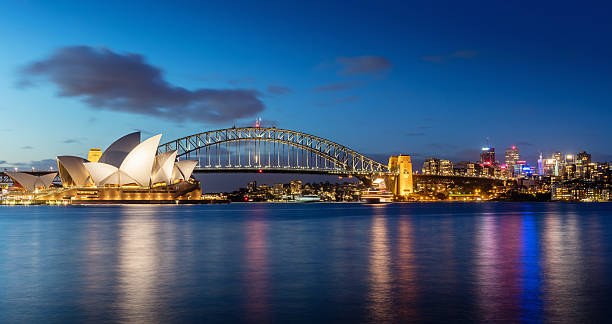
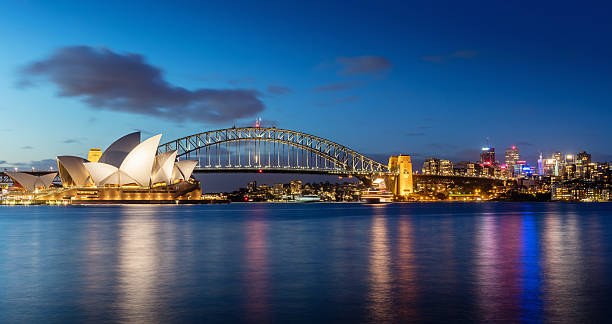

4 Days and 3 Nights Getaway
Price starts at €3,100 per person (excluding flights)
● Day 1
- 12:00PM – Arrive at Sydney Airport, private transfer to hotel
- 3:00PM – Afternoon walk through The Rocks & harborfront
- 7:30PM – Dinner cruise on Sydney Harbour
● Day 2
- 9:00AM – Guided tour of Sydney Opera House
- 11:30AM – Brunch at a café in Circular Quay
- 2:00PM – Ferry to Manly Beach and coastal walk
- 7:00PM – Rooftop dinner in Surry Hills
● Day 3
- 8:00AM – Bondi to Coogee coastal walk + beach time
- 1:00PM – Fish and chips on the beach
- 3:00PM – Optional surf lesson or wellness spa
- 6:30PM – Sunset cocktails at Opera Bar
● Day 4
- 9:00AM – Explore Paddington Markets or Darling Harbour
- 11:30AM – Farewell flat white & brunch in Newtown
- 1:00PM – Check-out & airport transfer
 
